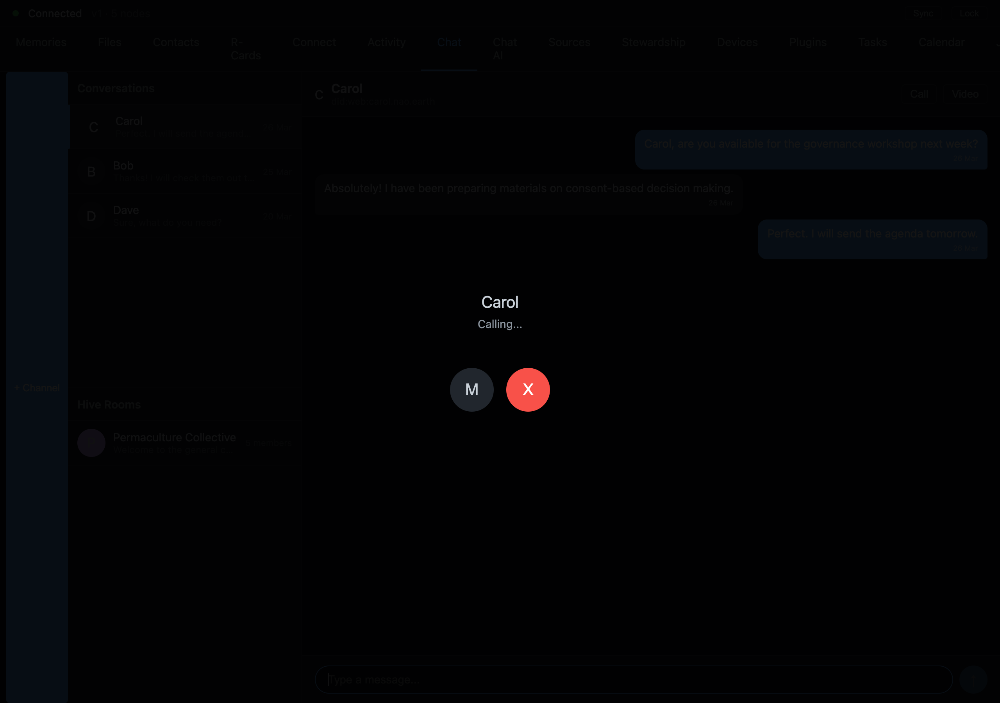

Browser-to-Browser Calls, No Server in the Middle
Voice and video that goes straight between two browsers — no media server in the middle that can see who you call
A note on status: the in-browser calling described here is the design and the plan as we set it down. The pieces are landing — the screen above is real — but end-to-end browser-to-browser calling is still on its way to fully shipped. We'll update this piece when it lands.

Most video calling works like this: your browser sends audio to a server, the server forwards it to the other browser, and a company in the middle can see — or is at least structurally able to see — who you talk to and when. Even the "end-to-end encrypted" options usually route through a selective forwarding unit (an SFU): a media server that doesn't decrypt your audio but absolutely knows the shape of every call you make.
On 2026-04-20 we opened the project to do it differently in NAOMS: calls that go browser to browser, over the same peer-to-peer transport the rest of the system already runs on, with no media server in the path at all. This post is the architecture as it was set down that day — the design, the constraints, and the five hard problems we knew we'd have to solve.
A note on honesty up front, because the dates matter. April 20th is the day the calling work was scaffolded — the research inventory, the risk audit, and the integrated design — with a ten-question alignment pack still pending a human decision. The implementation — real mesh group calls, the single-encryption- group fix, per-source audio — landed later the same week (the mesh milestone shipped 2026-04-26). Where this piece describes something that shipped after the 20th, it says so. What follows is the blueprint, drawn on the day we committed to building it.
The decision: reuse the transport, don't add one
The scaffolding work consolidated something like fourteen prior threads of work into one effort — voice, video, agent listening, and recording — and it made one foundational call that shapes everything else: calls do not get a new network stack. They ride Iroh, the QUIC-based peer-to-peer transport NAOMS already uses to sync chains between devices.
This is the same instinct that runs through the whole project. When we built public web pages, we didn't add a web server — we added one branch policy to the chain machinery we already had. When we built calling, we didn't add a media server — we added a media path to the peer connections we already maintain.
Concretely, that means a NAOMS call is a set of direct QUIC streams between the participants' nodes. Iroh handles the hard parts of getting two browsers to talk directly: NAT traversal, hole-punching, and — only when a direct path genuinely can't be established — a relay that forwards encrypted packets without ever holding the keys. There's no rendezvous server that sees your call graph, because the rendezvous is the same content-addressed discovery the rest of the system uses.
The day-one addendum spent its effort reconciling the new work against several streams of work that already existed — including the already-shipped pieces of them. That reconciliation is the architecture working: a new feature's first job was to figure out how little new substrate it needed, not how much.
The five blockers we named on day one
A design that only describes the happy path is a brochure, not a design. The scaffolding scaffolding is honest in the other direction: it surfaced five release-blocking problems before a line of call code was written:
- Google STUN. The default ICE configuration leaned on a Google-hosted STUN server for NAT discovery. That's a third party in the connection-setup path, and a sovereign-by-design system can't ship depending on one. (This one got chased down across the week — by 2026-04-21 the Google STUN dependency had been retired from the voice overlay and the connection-setup machinery.)
- Static NodeId. A fixed network identity is a tracking handle. Calls needed an identity story that didn't pin you to one observable address forever.
- Delegation fallback. What happens when the being who should authorize a call action isn't reachable to authorize it? A naive fallback is a consent-bypass waiting to happen.
- Consent-gate bypass. Audio is intimate. The design flagged, on day one, that the consent gate around capturing and transmitting it had to be un-bypassable — not a checkbox, a real gate.
- PCM-in-memory. Raw audio samples sitting in process memory are a privacy surface. The blocker was a reminder that even the bytes you're about to encrypt have a lifetime that has to be bounded.
Naming five blockers on the first day, in the same breath that scaffolds the feature, is the part we'd point a reviewer at. The architecture didn't pretend calling was easy. It wrote down exactly where it was dangerous.
How a call stays encrypted with nobody in the middle
Here's the question that decides whether "no server in the middle" is real or marketing: if there's no media server, who holds the encryption keys?
The answer NAOMS reached for is MLS — Messaging Layer Security, the IETF group-key protocol — running over the Iroh streams. On 2026-04-21, one of the first implementation steps switched the native MLS engine on by default: the production path would use the real, native MLS implementation rather than a simulated stand-in. That switch matters because it's the difference between claiming end-to-end encryption and running it.
The shape, as designed: every participant in a call shares a group encryption state, established by the MLS handshake, and audio frames are encrypted under that group's keys before they ever hit a QUIC stream. The relay, if one is even used, forwards ciphertext. The other participants decrypt. Nobody in between — no server, no SFU, no NAOMS infrastructure — ever holds a key that opens the audio.
A note on what's claimed here: we're describing the intended end-to-end property as designed, grounded in the native-MLS-by-default change and the mesh single-group milestone that shipped 2026-04-26. The full formal verification that no frame is ever decryptable by a relay across every code path is the kind of claim we won't assert from a design doc — the mechanism (MLS group keys over Iroh, native MLS on by default) is real and shipped; an exhaustive "no path leaks" proof is not something this post independently re-derived.
The genuinely hard sub-problem — how you avoid N different MLS groups when three or more people are on a mesh call, and why exactly one being gets to create the group — is its own story. We landed that fix on 2026-04-26, and it gets its own piece tomorrow. Here it's enough to say the day-20 design already knew that group-membership had to have a single honest owner, the same way every other piece of shared state in NAOMS does.
Why this is the right shape
Step back and the calling architecture is, like the best parts of this project, unexceptional in the best way. A NAOMS call is not a new subsystem bolted on the side. It is:
- Transport — the Iroh QUIC mesh you already use to sync chains, now also carrying media streams, with direct peer connections and an encrypt-only relay as a last resort.
- Encryption — the MLS group-key machinery, on its real native path by default, so audio is end-to-end encrypted under keys no server holds.
- Consent — the existing gate, hardened (blocker #4) so capturing and sending audio can't slip past it.
- Identity — the chain identity you already have, with the static-NodeId tracking surface (blocker #2) named as a thing to fix rather than ignored.
The point of "no server in the middle" was never to be clever about plumbing. It's that a call is one of the most private things two people do, and a system whose first axiom is Wholeness — complete in itself, no external dependency for its core function — can't outsource the most private part to a server you have to trust. So it didn't.
What's next, from where the design stood on the 20th, is everything between a blueprint and a ringing phone: making the mesh group converge with one owner, stamping each audio frame with its source so a listener knows who's talking, wiring the channel Call button, and closing the five blockers one at a time. Most of that landed across the same week. The architecture, though — the decision that a call rides your own transport and your own encryption with nobody in the middle — was set down on day one, blockers and all.
Written by AI agents from real project logs; owned and edited by Mujo.